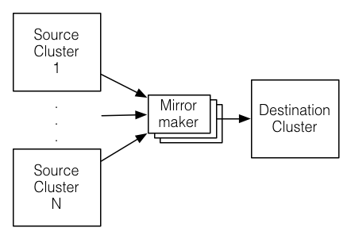

6. Operations
Here is some information on actually running Kafka as a production system based on usage and experience at LinkedIn. Please send us any additional tips you know of.
6.1 Basic Kafka Operations
This section will review the most common operations you will perform on your Kafka cluster. All of the tools reviewed in this section are available under the bin/ directory of the Kafka distribution and each tool will print details on all possible commandline options if it is run with no arguments.
Adding and removing topics
You have the option of either adding topics manually or having them be created automatically when data is first published to a non-existent topic. If topics are auto-created then you may want to tune the default topic configurations used for auto-created topics.
Topics are added and modified using the topic tool:
> bin/kafka-topics.sh --zookeeper zk_host:port/chroot --create --topic my_topic_name
--partitions 20 --replication-factor 3 --config x=y
The replication factor controls how many servers will replicate each message that is written. If you have a replication factor of 3 then up to 2 servers can fail before you will lose access to your data. We recommend you use a replication factor of 2 or 3 so that you can transparently bounce machines without interrupting data consumption.
The partition count controls how many logs the topic will be sharded into. There are several impacts of the partition count. First each partition must fit entirely on a single server. So if you have 20 partitions the full data set (and read and write load) will be handled by no more than 20 servers (no counting replicas). Finally the partition count impacts the maximum parallelism of your consumers. This is discussed in greater detail in theconcepts section.
Each sharded partition log is placed into its own folder under the Kafka log directory. The name of such folders consists of the topic name, appended by a dash (-) and the partition id. Since a typical folder name can not be over 255 characters long, there will be a limitation on the length of topic names. We assume the number of partitions will not ever be above 100,000. Therefore, topic names cannot be longer than 249 characters. This leaves just enough room in the folder name for a dash and a potentially 5 digit long partition id.
The configurations added on the command line override the default settings the server has for things like the length of time data should be retained. The complete set of per-topic configurations is documented here.
Modifying topics
You can change the configuration or partitioning of a topic using the same topic tool.
To add partitions you can do
> bin/kafka-topics.sh --zookeeper zk_host:port/chroot --alter --topic my_topic_name
--partitions 40
Be aware that one use case for partitions is to semantically partition data, and adding partitions doesn't change the partitioning of existing data so this may disturb consumers if they rely on that partition. That is if data is partitioned by hash(key) % number_of_partitions then this partitioning will potentially be shuffled by adding partitions but Kafka will not attempt to automatically redistribute data in any way.
To add configs:
> bin/kafka-topics.sh --zookeeper zk_host:port/chroot --alter --topic my_topic_name --config x=y
To remove a config:
> bin/kafka-topics.sh --zookeeper zk_host:port/chroot --alter --topic my_topic_name --delete-config x
And finally deleting a topic:
> bin/kafka-topics.sh --zookeeper zk_host:port/chroot --delete --topic my_topic_name
Topic deletion option is disabled by default. To enable it set the server config
delete.topic.enable=trueKafka does not currently support reducing the number of partitions for a topic.
Instructions for changing the replication factor of a topic can be found here.
Graceful shutdown
The Kafka cluster will automatically detect any broker shutdown or failure and elect new leaders for the partitions on that machine. This will occur whether a server fails or it is brought down intentionally for maintenance or configuration changes. For the latter cases Kafka supports a more graceful mechanism for stopping a server than just killing it. When a server is stopped gracefully it has two optimizations it will take advantage of:
- It will sync all its logs to disk to avoid needing to do any log recovery when it restarts (i.e. validating the checksum for all messages in the tail of the log). Log recovery takes time so this speeds up intentional restarts.
- It will migrate any partitions the server is the leader for to other replicas prior to shutting down. This will make the leadership transfer faster and minimize the time each partition is unavailable to a few milliseconds.
Syncing the logs will happen automatically whenever the server is stopped other than by a hard kill, but the controlled leadership migration requires using a special setting:
controlled.shutdown.enable=true
Note that controlled shutdown will only succeed if all the partitions hosted on the broker have replicas (i.e. the replication factor is greater than 1 and at least one of these replicas is alive). This is generally what you want since shutting down the last replica would make that topic partition unavailable.
Balancing leadership
Whenever a broker stops or crashes leadership for that broker's partitions transfers to other replicas. This means that by default when the broker is restarted it will only be a follower for all its partitions, meaning it will not be used for client reads and writes.
To avoid this imbalance, Kafka has a notion of preferred replicas. If the list of replicas for a partition is 1,5,9 then node 1 is preferred as the leader to either node 5 or 9 because it is earlier in the replica list. You can have the Kafka cluster try to restore leadership to the restored replicas by running the command:
> bin/kafka-preferred-replica-election.sh --zookeeper zk_host:port/chroot
Since running this command can be tedious you can also configure Kafka to do this automatically by setting the following configuration:
auto.leader.rebalance.enable=true
Balancing Replicas Across Racks
The rack awareness feature spreads replicas of the same partition across different racks. This extends the guarantees Kafka provides for broker-failure to cover rack-failure, limiting the risk of data loss should all the brokers on a rack fail at once. The feature can also be applied to other broker groupings such as availability zones in EC2.
You can specify that a broker belongs to a particular rack by adding a property to the broker config:
broker.rack=my-rack-idWhen a topic is created, modified or replicas are redistributed, the rack constraint will be honoured, ensuring replicas span as many racks as they can (a partition will span min(#racks, replication-factor) different racks).
The algorithm used to assign replicas to brokers ensures that the number of leaders per broker will be constant, regardless of how brokers are distributed across racks. This ensures balanced throughput.
However if racks are assigned different numbers of brokers, the assignment of replicas will not be even. Racks with fewer brokers will get more replicas, meaning they will use more storage and put more resources into replication. Hence it is sensible to configure an equal number of brokers per rack.
Mirroring data between clusters
We refer to the process of replicating data between Kafka clusters "mirroring" to avoid confusion with the replication that happens amongst the nodes in a single cluster. Kafka comes with a tool for mirroring data between Kafka clusters. The tool reads from a source cluster and writes to a destination cluster, like this:

A common use case for this kind of mirroring is to provide a replica in another datacenter. This scenario will be discussed in more detail in the next section.
You can run many such mirroring processes to increase throughput and for fault-tolerance (if one process dies, the others will take overs the additional load).
Data will be read from topics in the source cluster and written to a topic with the same name in the destination cluster. In fact the mirror maker is little more than a Kafka consumer and producer hooked together.
The source and destination clusters are completely independent entities: they can have different numbers of partitions and the offsets will not be the same. For this reason the mirror cluster is not really intended as a fault-tolerance mechanism (as the consumer position will be different); for that we recommend using normal in-cluster replication. The mirror maker process will, however, retain and use the message key for partitioning so order is preserved on a per-key basis.
Here is an example showing how to mirror a single topic (named my-topic) from two input clusters:
> bin/kafka-mirror-maker.sh
--consumer.config consumer-1.properties --consumer.config consumer-2.properties
--producer.config producer.properties --whitelist my-topic
Note that we specify the list of topics with the --whitelist option. This option allows any regular expression using Java-style regular expressions. So you could mirror two topics named A and B using --whitelist 'A|B'. Or you could mirror all topics using --whitelist '*'. Make sure to quote any regular expression to ensure the shell doesn't try to expand it as a file path. For convenience we allow the use of ',' instead of '|' to specify a list of topics.
Sometimes it is easier to say what it is that you don't want. Instead of using --whitelist to say what you want to mirror you can use --blacklist to say what to exclude. This also takes a regular expression argument. However, --blacklist is not supported when using --new.consumer.
Combining mirroring with the configuration auto.create.topics.enable=true makes it possible to have a replica cluster that will automatically create and replicate all data in a source cluster even as new topics are added.
Checking consumer position
Sometimes it's useful to see the position of your consumers. We have a tool that will show the position of all consumers in a consumer group as well as how far behind the end of the log they are. To run this tool on a consumer group named my-group consuming a topic named my-topic would look like this:
> bin/kafka-run-class.sh kafka.tools.ConsumerOffsetChecker --zookeeper localhost:2181 --group test
Group Topic Pid Offset logSize Lag Owner
my-group my-topic 0 0 0 0 test_jkreps-mn-1394154511599-60744496-0
my-group my-topic 1 0 0 0 test_jkreps-mn-1394154521217-1a0be913-0
Note, however, after 0.9.0, the kafka.tools.ConsumerOffsetChecker tool is deprecated and you should use the kafka.admin.ConsumerGroupCommand (or the bin/kafka-consumer-groups.sh script) to manage consumer groups, including consumers created with the new consumer API.
Managing Consumer Groups
With the ConsumerGroupCommand tool, we can list, delete, or describe consumer groups. For example, to list all consumer groups across all topics:
> bin/kafka-consumer-groups.sh --zookeeper localhost:2181 --list
test-consumer-group
To view offsets as in the previous example with the ConsumerOffsetChecker, we "describe" the consumer group like this:
> bin/kafka-consumer-groups.sh --zookeeper localhost:2181 --describe --group test-consumer-group
GROUP TOPIC PARTITION CURRENT-OFFSET LOG-END-OFFSET LAG OWNER
test-consumer-group test-foo 0 1 3 2 test-consumer-group_postamac.local-1456198719410-29ccd54f-0
When you're using the new consumer API where the broker handles coordination of partition handling and rebalance, you can manage the groups with the "--new-consumer" flags:
> bin/kafka-consumer-groups.sh --new-consumer --bootstrap-server broker1:9092 --list
Expanding your cluster
Adding servers to a Kafka cluster is easy, just assign them a unique broker id and start up Kafka on your new servers. However these new servers will not automatically be assigned any data partitions, so unless partitions are moved to them they won't be doing any work until new topics are created. So usually when you add machines to your cluster you will want to migrate some existing data to these machines.
The process of migrating data is manually initiated but fully automated. Under the covers what happens is that Kafka will add the new server as a follower of the partition it is migrating and allow it to fully replicate the existing data in that partition. When the new server has fully replicated the contents of this partition and joined the in-sync replica one of the existing replicas will delete their partition's data.
The partition reassignment tool can be used to move partitions across brokers. An ideal partition distribution would ensure even data load and partition sizes across all brokers. The partition reassignment tool does not have the capability to automatically study the data distribution in a Kafka cluster and move partitions around to attain an even load distribution. As such, the admin has to figure out which topics or partitions should be moved around.
The partition reassignment tool can run in 3 mutually exclusive modes -
- --generate: In this mode, given a list of topics and a list of brokers, the tool generates a candidate reassignment to move all partitions of the specified topics to the new brokers. This option merely provides a convenient way to generate a partition reassignment plan given a list of topics and target brokers.
- --execute: In this mode, the tool kicks off the reassignment of partitions based on the user provided reassignment plan. (using the --reassignment-json-file option). This can either be a custom reassignment plan hand crafted by the admin or provided by using the --generate option
- --verify: In this mode, the tool verifies the status of the reassignment for all partitions listed during the last --execute. The status can be either of successfully completed, failed or in progress
Automatically migrating data to new machines
The partition reassignment tool can be used to move some topics off of the current set of brokers to the newly added brokers. This is typically useful while expanding an existing cluster since it is easier to move entire topics to the new set of brokers, than moving one partition at a time. When used to do this, the user should provide a list of topics that should be moved to the new set of brokers and a target list of new brokers. The tool then evenly distributes all partitions for the given list of topics across the new set of brokers. During this move, the replication factor of the topic is kept constant. Effectively the replicas for all partitions for the input list of topics are moved from the old set of brokers to the newly added brokers.
For instance, the following example will move all partitions for topics foo1,foo2 to the new set of brokers 5,6. At the end of this move, all partitions for topics foo1 and foo2 will only exist on brokers 5,6.
Since the tool accepts the input list of topics as a json file, you first need to identify the topics you want to move and create the json file as follows:
> cat topics-to-move.json
{"topics": [{"topic": "foo1"},
{"topic": "foo2"}],
"version":1
}
Once the json file is ready, use the partition reassignment tool to generate a candidate assignment:
> bin/kafka-reassign-partitions.sh --zookeeper localhost:2181 --topics-to-move-json-file topics-to-move.json --broker-list "5,6" --generate
Current partition replica assignment
{"version":1,
"partitions":[{"topic":"foo1","partition":2,"replicas":[1,2]},
{"topic":"foo1","partition":0,"replicas":[3,4]},
{"topic":"foo2","partition":2,"replicas":[1,2]},
{"topic":"foo2","partition":0,"replicas":[3,4]},
{"topic":"foo1","partition":1,"replicas":[2,3]},
{"topic":"foo2","partition":1,"replicas":[2,3]}]
}
Proposed partition reassignment configuration
{"version":1,
"partitions":[{"topic":"foo1","partition":2,"replicas":[5,6]},
{"topic":"foo1","partition":0,"replicas":[5,6]},
{"topic":"foo2","partition":2,"replicas":[5,6]},
{"topic":"foo2","partition":0,"replicas":[5,6]},
{"topic":"foo1","partition":1,"replicas":[5,6]},
{"topic":"foo2","partition":1,"replicas":[5,6]}]
}
The tool generates a candidate assignment that will move all partitions from topics foo1,foo2 to brokers 5,6. Note, however, that at this point, the partition movement has not started, it merely tells you the current assignment and the proposed new assignment. The current assignment should be saved in case you want to rollback to it. The new assignment should be saved in a json file (e.g. expand-cluster-reassignment.json) to be input to the tool with the --execute option as follows:
> bin/kafka-reassign-partitions.sh --zookeeper localhost:2181 --reassignment-json-file expand-cluster-reassignment.json --execute
Current partition replica assignment
{"version":1,
"partitions":[{"topic":"foo1","partition":2,"replicas":[1,2]},
{"topic":"foo1","partition":0,"replicas":[3,4]},
{"topic":"foo2","partition":2,"replicas":[1,2]},
{"topic":"foo2","partition":0,"replicas":[3,4]},
{"topic":"foo1","partition":1,"replicas":[2,3]},
{"topic":"foo2","partition":1,"replicas":[2,3]}]
}
Save this to use as the --reassignment-json-file option during rollback
Successfully started reassignment of partitions
{"version":1,
"partitions":[{"topic":"foo1","partition":2,"replicas":[5,6]},
{"topic":"foo1","partition":0,"replicas":[5,6]},
{"topic":"foo2","partition":2,"replicas":[5,6]},
{"topic":"foo2","partition":0,"replicas":[5,6]},
{"topic":"foo1","partition":1,"replicas":[5,6]},
{"topic":"foo2","partition":1,"replicas":[5,6]}]
}
Finally, the --verify option can be used with the tool to check the status of the partition reassignment. Note that the same expand-cluster-reassignment.json (used with the --execute option) should be used with the --verify option:
> bin/kafka-reassign-partitions.sh --zookeeper localhost:2181 --reassignment-json-file expand-cluster-reassignment.json --verify
Status of partition reassignment:
Reassignment of partition [foo1,0] completed successfully
Reassignment of partition [foo1,1] is in progress
Reassignment of partition [foo1,2] is in progress
Reassignment of partition [foo2,0] completed successfully
Reassignment of partition [foo2,1] completed successfully
Reassignment of partition [foo2,2] completed successfully
Custom partition assignment and migration
The partition reassignment tool can also be used to selectively move replicas of a partition to a specific set of brokers. When used in this manner, it is assumed that the user knows the reassignment plan and does not require the tool to generate a candidate reassignment, effectively skipping the --generate step and moving straight to the --execute step
For instance, the following example moves partition 0 of topic foo1 to brokers 5,6 and partition 1 of topic foo2 to brokers 2,3:
The first step is to hand craft the custom reassignment plan in a json file:
> cat custom-reassignment.json
{"version":1,"partitions":[{"topic":"foo1","partition":0,"replicas":[5,6]},{"topic":"foo2","partition":1,"replicas":[2,3]}]}
Then, use the json file with the --execute option to start the reassignment process:
> bin/kafka-reassign-partitions.sh --zookeeper localhost:2181 --reassignment-json-file custom-reassignment.json --execute
Current partition replica assignment
{"version":1,
"partitions":[{"topic":"foo1","partition":0,"replicas":[1,2]},
{"topic":"foo2","partition":1,"replicas":[3,4]}]
}
Save this to use as the --reassignment-json-file option during rollback
Successfully started reassignment of partitions
{"version":1,
"partitions":[{"topic":"foo1","partition":0,"replicas":[5,6]},
{"topic":"foo2","partition":1,"replicas":[2,3]}]
}
The --verify option can be used with the tool to check the status of the partition reassignment. Note that the same expand-cluster-reassignment.json (used with the --execute option) should be used with the --verify option:
bin/kafka-reassign-partitions.sh --zookeeper localhost:2181 --reassignment-json-file custom-reassignment.json --verify
Status of partition reassignment:
Reassignment of partition [foo1,0] completed successfully
Reassignment of partition [foo2,1] completed successfully
Decommissioning brokers
The partition reassignment tool does not have the ability to automatically generate a reassignment plan for decommissioning brokers yet. As such, the admin has to come up with a reassignment plan to move the replica for all partitions hosted on the broker to be decommissioned, to the rest of the brokers. This can be relatively tedious as the reassignment needs to ensure that all the replicas are not moved from the decommissioned broker to only one other broker. To make this process effortless, we plan to add tooling support for decommissioning brokers in the future.
Increasing replication factor
Increasing the replication factor of an existing partition is easy. Just specify the extra replicas in the custom reassignment json file and use it with the --execute option to increase the replication factor of the specified partitions.
For instance, the following example increases the replication factor of partition 0 of topic foo from 1 to 3. Before increasing the replication factor, the partition's only replica existed on broker 5. As part of increasing the replication factor, we will add more replicas on brokers 6 and 7.
The first step is to hand craft the custom reassignment plan in a json file:
> cat increase-replication-factor.json
{"version":1,
"partitions":[{"topic":"foo","partition":0,"replicas":[5,6,7]}]}
Then, use the json file with the --execute option to start the reassignment process:
> bin/kafka-reassign-partitions.sh --zookeeper localhost:2181 --reassignment-json-file increase-replication-factor.json --execute
Current partition replica assignment
{"version":1,
"partitions":[{"topic":"foo","partition":0,"replicas":[5]}]}
Save this to use as the --reassignment-json-file option during rollback
Successfully started reassignment of partitions
{"version":1,
"partitions":[{"topic":"foo","partition":0,"replicas":[5,6,7]}]}
The --verify option can be used with the tool to check the status of the partition reassignment. Note that the same increase-replication-factor.json (used with the --execute option) should be used with the --verify option:
bin/kafka-reassign-partitions.sh --zookeeper localhost:2181 --reassignment-json-file increase-replication-factor.json --verify
Status of partition reassignment:
Reassignment of partition [foo,0] completed successfully
You can also verify the increase in replication factor with the kafka-topics tool:
> bin/kafka-topics.sh --zookeeper localhost:2181 --topic foo --describe
Topic:foo PartitionCount:1 ReplicationFactor:3 Configs:
Topic: foo Partition: 0 Leader: 5 Replicas: 5,6,7 Isr: 5,6,7
Setting quotas
It is possible to set default quotas that apply to all client-ids by setting these configs on the brokers. By default, each client-id receives an unlimited quota. The following sets the default quota per producer and consumer client-id to 10MB/sec.
quota.producer.default=10485760
quota.consumer.default=10485760
It is also possible to set custom quotas for each client.
> bin/kafka-configs.sh --zookeeper localhost:2181 --alter --add-config 'producer_byte_rate=1024,consumer_byte_rate=2048' --entity-name clientA --entity-type clients
Updated config for clientId: "clientA".
Here's how to describe the quota for a given client.
> ./kafka-configs.sh --zookeeper localhost:2181 --describe --entity-name clientA --entity-type clients
Configs for clients:clientA are producer_byte_rate=1024,consumer_byte_rate=2048
6.2 Datacenters
Some deployments will need to manage a data pipeline that spans multiple datacenters. Our recommended approach to this is to deploy a local Kafka cluster in each datacenter with application instances in each datacenter interacting only with their local cluster and mirroring between clusters (see the documentation on the mirror maker tool for how to do this).
This deployment pattern allows datacenters to act as independent entities and allows us to manage and tune inter-datacenter replication centrally. This allows each facility to stand alone and operate even if the inter-datacenter links are unavailable: when this occurs the mirroring falls behind until the link is restored at which time it catches up.
For applications that need a global view of all data you can use mirroring to provide clusters which have aggregate data mirrored from the local clusters in all datacenters. These aggregate clusters are used for reads by applications that require the full data set.
This is not the only possible deployment pattern. It is possible to read from or write to a remote Kafka cluster over the WAN, though obviously this will add whatever latency is required to get the cluster.
Kafka naturally batches data in both the producer and consumer so it can achieve high-throughput even over a high-latency connection. To allow this though it may be necessary to increase the TCP socket buffer sizes for the producer, consumer, and broker using the socket.send.buffer.bytes andsocket.receive.buffer.bytes configurations. The appropriate way to set this is documented here.
It is generally not advisable to run a single Kafka cluster that spans multiple datacenters over a high-latency link. This will incur very high replication latency both for Kafka writes and ZooKeeper writes, and neither Kafka nor ZooKeeper will remain available in all locations if the network between locations is unavailable.
6.3 Kafka Configuration
Important Client Configurations
The most important producer configurations control
- compression
- sync vs async production
- batch size (for async producers)
The most important consumer configuration is the fetch size.
All configurations are documented in the configuration section.
A Production Server Config
Here is our production server configuration:
# Replication configurations
num.replica.fetchers=4
replica.fetch.max.bytes=1048576
replica.fetch.wait.max.ms=500
replica.high.watermark.checkpoint.interval.ms=5000
replica.socket.timeout.ms=30000
replica.socket.receive.buffer.bytes=65536
replica.lag.time.max.ms=10000
controller.socket.timeout.ms=30000
controller.message.queue.size=10
# Log configuration
num.partitions=8
message.max.bytes=1000000
auto.create.topics.enable=true
log.index.interval.bytes=4096
log.index.size.max.bytes=10485760
log.retention.hours=168
log.flush.interval.ms=10000
log.flush.interval.messages=20000
log.flush.scheduler.interval.ms=2000
log.roll.hours=168
log.retention.check.interval.ms=300000
log.segment.bytes=1073741824
# ZK configuration
zookeeper.connection.timeout.ms=6000
zookeeper.sync.time.ms=2000
# Socket server configuration
num.io.threads=8
num.network.threads=8
socket.request.max.bytes=104857600
socket.receive.buffer.bytes=1048576
socket.send.buffer.bytes=1048576
queued.max.requests=16
fetch.purgatory.purge.interval.requests=100
producer.purgatory.purge.interval.requests=100
Our client configuration varies a fair amount between different use cases.
Java Version
From a security perspective, we recommend you use the latest released version of JDK 1.8 as older freely available versions have disclosed security vulnerabilities. LinkedIn is currently running JDK 1.8 u5 (looking to upgrade to a newer version) with the G1 collector. If you decide to use the G1 collector (the current default) and you are still on JDK 1.7, make sure you are on u51 or newer. LinkedIn tried out u21 in testing, but they had a number of problems with the GC implementation in that version. LinkedIn's tuning looks like this:
-Xmx6g -Xms6g -XX:MetaspaceSize=96m -XX:+UseG1GC
-XX:MaxGCPauseMillis=20 -XX:InitiatingHeapOccupancyPercent=35 -XX:G1HeapRegionSize=16M
-XX:MinMetaspaceFreeRatio=50 -XX:MaxMetaspaceFreeRatio=80
For reference, here are the stats on one of LinkedIn's busiest clusters (at peak):
- 60 brokers
- 50k partitions (replication factor 2)
- 800k messages/sec in
- 300 MB/sec inbound, 1 GB/sec+ outbound
The tuning looks fairly aggressive, but all of the brokers in that cluster have a 90% GC pause time of about 21ms, and they're doing less than 1 young GC per second.
6.4 Hardware and OS
We are using dual quad-core Intel Xeon machines with 24GB of memory.
You need sufficient memory to buffer active readers and writers. You can do a back-of-the-envelope estimate of memory needs by assuming you want to be able to buffer for 30 seconds and compute your memory need as write_throughput*30.
The disk throughput is important. We have 8x7200 rpm SATA drives. In general disk throughput is the performance bottleneck, and more disks is better. Depending on how you configure flush behavior you may or may not benefit from more expensive disks (if you force flush often then higher RPM SAS drives may be better).
OS
Kafka should run well on any unix system and has been tested on Linux and Solaris.
We have seen a few issues running on Windows and Windows is not currently a well supported platform though we would be happy to change that.
It is unlikely to require much OS-level tuning, but there are two potentially important OS-level configurations:
- File descriptor limits: Kafka uses file descriptors for log segments and open connections. If a broker hosts many partitions, consider that the broker needs at least (number_of_partitions)*(partition_size/segment_size) to track all log segments in addition to the number of connections the broker makes. We recommend at least 100000 allowed file descriptors for the broker processes as a starting point.
- Max socket buffer size: can be increased to enable high-performance data transfer between data centers as described here.
Disks and Filesystem
We recommend using multiple drives to get good throughput and not sharing the same drives used for Kafka data with application logs or other OS filesystem activity to ensure good latency. You can either RAID these drives together into a single volume or format and mount each drive as its own directory. Since Kafka has replication the redundancy provided by RAID can also be provided at the application level. This choice has several tradeoffs.
If you configure multiple data directories partitions will be assigned round-robin to data directories. Each partition will be entirely in one of the data directories. If data is not well balanced among partitions this can lead to load imbalance between disks.
RAID can potentially do better at balancing load between disks (although it doesn't always seem to) because it balances load at a lower level. The primary downside of RAID is that it is usually a big performance hit for write throughput and reduces the available disk space.
Another potential benefit of RAID is the ability to tolerate disk failures. However our experience has been that rebuilding the RAID array is so I/O intensive that it effectively disables the server, so this does not provide much real availability improvement.
Application vs. OS Flush Management
Kafka always immediately writes all data to the filesystem and supports the ability to configure the flush policy that controls when data is forced out of the OS cache and onto disk using the flush. This flush policy can be controlled to force data to disk after a period of time or after a certain number of messages has been written. There are several choices in this configuration.
Kafka must eventually call fsync to know that data was flushed. When recovering from a crash for any log segment not known to be fsync'd Kafka will check the integrity of each message by checking its CRC and also rebuild the accompanying offset index file as part of the recovery process executed on startup.
Note that durability in Kafka does not require syncing data to disk, as a failed node will always recover from its replicas.
We recommend using the default flush settings which disable application fsync entirely. This means relying on the background flush done by the OS and Kafka's own background flush. This provides the best of all worlds for most uses: no knobs to tune, great throughput and latency, and full recovery guarantees. We generally feel that the guarantees provided by replication are stronger than sync to local disk, however the paranoid still may prefer having both and application level fsync policies are still supported.
The drawback of using application level flush settings is that it is less efficient in it's disk usage pattern (it gives the OS less leeway to re-order writes) and it can introduce latency as fsync in most Linux filesystems blocks writes to the file whereas the background flushing does much more granular page-level locking.
In general you don't need to do any low-level tuning of the filesystem, but in the next few sections we will go over some of this in case it is useful.
Understanding Linux OS Flush Behavior
In Linux, data written to the filesystem is maintained in pagecache until it must be written out to disk (due to an application-level fsync or the OS's own flush policy). The flushing of data is done by a set of background threads called pdflush (or in post 2.6.32 kernels "flusher threads").
Pdflush has a configurable policy that controls how much dirty data can be maintained in cache and for how long before it must be written back to disk. This policy is described here. When Pdflush cannot keep up with the rate of data being written it will eventually cause the writing process to block incurring latency in the writes to slow down the accumulation of data.
You can see the current state of OS memory usage by doing
> cat /proc/meminfo
The meaning of these values are described in the link above.
Using pagecache has several advantages over an in-process cache for storing data that will be written out to disk:
- The I/O scheduler will batch together consecutive small writes into bigger physical writes which improves throughput.
- The I/O scheduler will attempt to re-sequence writes to minimize movement of the disk head which improves throughput.
- It automatically uses all the free memory on the machine
Filesystem Selection
Kafka uses regular files on disk, and as such it has no hard dependency on a specific filesystem. The two filesystems which have the most usage, however, are EXT4 and XFS. Historically, EXT4 has had more usage, but recent improvements to the XFS filesystem have shown it to have better performance characteristics for Kafka's workload with no compromise in stability.
Comparison testing was performed on a cluster with significant message loads, using a variety of filesystem creation and mount options. The primary metric in Kafka that was monitored was the "Request Local Time", indicating the amount of time append operations were taking. XFS resulted in much better local times (160ms vs. 250ms+ for the best EXT4 configuration), as well as lower average wait times. The XFS performance also showed less variability in disk performance.
General Filesystem Notes
For any filesystem used for data directories, on Linux systems, the following options are recommended to be used at mount time:
- noatime: This option disables updating of a file's atime (last access time) attribute when the file is read. This can eliminate a significant number of filesystem writes, especially in the case of bootstrapping consumers. Kafka does not rely on the atime attributes at all, so it is safe to disable this.
XFS Notes
The XFS filesystem has a significant amount of auto-tuning in place, so it does not require any change in the default settings, either at filesystem creation time or at mount. The only tuning parameters worth considering are:
- largeio: This affects the preferred I/O size reported by the stat call. While this can allow for higher performance on larger disk writes, in practice it had minimal or no effect on performance.
- nobarrier: For underlying devices that have battery-backed cache, this option can provide a little more performance by disabling periodic write flushes. However, if the underlying device is well-behaved, it will report to the filesystem that it does not require flushes, and this option will have no effect.
EXT4 Notes
EXT4 is a serviceable choice of filesystem for the Kafka data directories, however getting the most performance out of it will require adjusting several mount options. In addition, these options are generally unsafe in a failure scenario, and will result in much more data loss and corruption. For a single broker failure, this is not much of a concern as the disk can be wiped and the replicas rebuilt from the cluster. In a multiple-failure scenario, such as a power outage, this can mean underlying filesystem (and therefore data) corruption that is not easily recoverable. The following options can be adjusted:
- data=writeback: Ext4 defaults to data=ordered which puts a strong order on some writes. Kafka does not require this ordering as it does very paranoid data recovery on all unflushed log. This setting removes the ordering constraint and seems to significantly reduce latency.
- Disabling journaling: Journaling is a tradeoff: it makes reboots faster after server crashes but it introduces a great deal of additional locking which adds variance to write performance. Those who don't care about reboot time and want to reduce a major source of write latency spikes can turn off journaling entirely.
- commit=num_secs: This tunes the frequency with which ext4 commits to its metadata journal. Setting this to a lower value reduces the loss of unflushed data during a crash. Setting this to a higher value will improve throughput.
- nobh: This setting controls additional ordering guarantees when using data=writeback mode. This should be safe with Kafka as we do not depend on write ordering and improves throughput and latency.
- delalloc: Delayed allocation means that the filesystem avoid allocating any blocks until the physical write occurs. This allows ext4 to allocate a large extent instead of smaller pages and helps ensure the data is written sequentially. This feature is great for throughput. It does seem to involve some locking in the filesystem which adds a bit of latency variance.
6.6 Monitoring
Kafka uses Yammer Metrics for metrics reporting in both the server and the client. This can be configured to report stats using pluggable stats reporters to hook up to your monitoring system.
The easiest way to see the available metrics is to fire up jconsole and point it at a running kafka client or server; this will allow browsing all metrics with JMX.
We do graphing and alerting on the following metrics:
| DescriptionMbean nameNormal value | ||
|---|---|---|
| Message in rate | kafka.server:type=BrokerTopicMetrics,name=MessagesInPerSec | |
| Byte in rate | kafka.server:type=BrokerTopicMetrics,name=BytesInPerSec | |
| Request rate | kafka.network:type=RequestMetrics,name=RequestsPerSec,request={Produce|FetchConsumer|FetchFollower} | |
| Byte out rate | kafka.server:type=BrokerTopicMetrics,name=BytesOutPerSec | |
| Log flush rate and time | kafka.log:type=LogFlushStats,name=LogFlushRateAndTimeMs | |
| # of under replicated partitions (|ISR| < |all replicas|) | kafka.server:type=ReplicaManager,name=UnderReplicatedPartitions | 0 |
| Is controller active on broker | kafka.controller:type=KafkaController,name=ActiveControllerCount | only one broker in the cluster should have 1 |
| Leader election rate | kafka.controller:type=ControllerStats,name=LeaderElectionRateAndTimeMs | non-zero when there are broker failures |
| Unclean leader election rate | kafka.controller:type=ControllerStats,name=UncleanLeaderElectionsPerSec | 0 |
| Partition counts | kafka.server:type=ReplicaManager,name=PartitionCount | mostly even across brokers |
| Leader replica counts | kafka.server:type=ReplicaManager,name=LeaderCount | mostly even across brokers |
| ISR shrink rate | kafka.server:type=ReplicaManager,name=IsrShrinksPerSec | If a broker goes down, ISR for some of the partitions will shrink. When that broker is up again, ISR will be expanded once the replicas are fully caught up. Other than that, the expected value for both ISR shrink rate and expansion rate is 0. |
| ISR expansion rate | kafka.server:type=ReplicaManager,name=IsrExpandsPerSec | See above |
| Max lag in messages btw follower and leader replicas | kafka.server:type=ReplicaFetcherManager,name=MaxLag,clientId=Replica | lag should be proportional to the maximum batch size of a produce request. |
| Lag in messages per follower replica | kafka.server:type=FetcherLagMetrics,name=ConsumerLag,clientId=([-.\w]+),topic=([-.\w]+),partition=([0-9]+) | lag should be proportional to the maximum batch size of a produce request. |
| Requests waiting in the producer purgatory | kafka.server:type=ProducerRequestPurgatory,name=PurgatorySize | non-zero if ack=-1 is used |
| Requests waiting in the fetch purgatory | kafka.server:type=FetchRequestPurgatory,name=PurgatorySize | size depends on fetch.wait.max.ms in the consumer |
| Request total time | kafka.network:type=RequestMetrics,name=TotalTimeMs,request={Produce|FetchConsumer|FetchFollower} | broken into queue, local, remote and response send time |
| Time the request waiting in the request queue | kafka.network:type=RequestMetrics,name=QueueTimeMs,request={Produce|FetchConsumer|FetchFollower} | |
| Time the request being processed at the leader | kafka.network:type=RequestMetrics,name=LocalTimeMs,request={Produce|FetchConsumer|FetchFollower} | |
| Time the request waits for the follower | kafka.network:type=RequestMetrics,name=RemoteTimeMs,request={Produce|FetchConsumer|FetchFollower} | non-zero for produce requests when ack=-1 |
| Time to send the response | kafka.network:type=RequestMetrics,name=ResponseSendTimeMs,request={Produce|FetchConsumer|FetchFollower} | |
| Number of messages the consumer lags behind the producer by | kafka.consumer:type=ConsumerFetcherManager,name=MaxLag,clientId=([-.\w]+) | |
| The average fraction of time the network processors are idle | kafka.network:type=SocketServer,name=NetworkProcessorAvgIdlePercent | between 0 and 1, ideally > 0.3 |
| The average fraction of time the request handler threads are idle | kafka.server:type=KafkaRequestHandlerPool,name=RequestHandlerAvgIdlePercent | between 0 and 1, ideally > 0.3 |
| Quota metrics per client-id | kafka.server:type={Produce|Fetch},client-id==([-.\w]+) | Two attributes. throttle-time indicates the amount of time in ms the client-id was throttled. Ideally = 0. byte-rate indicates the data produce/consume rate of the client in bytes/sec. |
New producer monitoring
The following metrics are available on new producer instances.
| Metric/Attribute nameDescriptionMbean name | ||
|---|---|---|
| waiting-threads | The number of user threads blocked waiting for buffer memory to enqueue their records. | kafka.producer:type=producer-metrics,client-id=([-.\w]+) |
| buffer-total-bytes | The maximum amount of buffer memory the client can use (whether or not it is currently used). | kafka.producer:type=producer-metrics,client-id=([-.\w]+) |
| buffer-available-bytes | The total amount of buffer memory that is not being used (either unallocated or in the free list). | kafka.producer:type=producer-metrics,client-id=([-.\w]+) |
| bufferpool-wait-time | The fraction of time an appender waits for space allocation. | kafka.producer:type=producer-metrics,client-id=([-.\w]+) |
| batch-size-avg | The average number of bytes sent per partition per-request. | kafka.producer:type=producer-metrics,client-id=([-.\w]+) |
| batch-size-max | The max number of bytes sent per partition per-request. | kafka.producer:type=producer-metrics,client-id=([-.\w]+) |
| compression-rate-avg | The average compression rate of record batches. | kafka.producer:type=producer-metrics,client-id=([-.\w]+) |
| record-queue-time-avg | The average time in ms record batches spent in the record accumulator. | kafka.producer:type=producer-metrics,client-id=([-.\w]+) |
| record-queue-time-max | The maximum time in ms record batches spent in the record accumulator. | kafka.producer:type=producer-metrics,client-id=([-.\w]+) |
| request-latency-avg | The average request latency in ms. | kafka.producer:type=producer-metrics,client-id=([-.\w]+) |
| request-latency-max | The maximum request latency in ms. | kafka.producer:type=producer-metrics,client-id=([-.\w]+) |
| record-send-rate | The average number of records sent per second. | kafka.producer:type=producer-metrics,client-id=([-.\w]+) |
| records-per-request-avg | The average number of records per request. | kafka.producer:type=producer-metrics,client-id=([-.\w]+) |
| record-retry-rate | The average per-second number of retried record sends. | kafka.producer:type=producer-metrics,client-id=([-.\w]+) |
| record-error-rate | The average per-second number of record sends that resulted in errors. | kafka.producer:type=producer-metrics,client-id=([-.\w]+) |
| record-size-max | The maximum record size. | kafka.producer:type=producer-metrics,client-id=([-.\w]+) |
| record-size-avg | The average record size. | kafka.producer:type=producer-metrics,client-id=([-.\w]+) |
| requests-in-flight | The current number of in-flight requests awaiting a response. | kafka.producer:type=producer-metrics,client-id=([-.\w]+) |
| metadata-age | The age in seconds of the current producer metadata being used. | kafka.producer:type=producer-metrics,client-id=([-.\w]+) |
| connection-close-rate | Connections closed per second in the window. | kafka.producer:type=producer-metrics,client-id=([-.\w]+) |
| connection-creation-rate | New connections established per second in the window. | kafka.producer:type=producer-metrics,client-id=([-.\w]+) |
| network-io-rate | The average number of network operations (reads or writes) on all connections per second. | kafka.producer:type=producer-metrics,client-id=([-.\w]+) |
| outgoing-byte-rate | The average number of outgoing bytes sent per second to all servers. | kafka.producer:type=producer-metrics,client-id=([-.\w]+) |
| request-rate | The average number of requests sent per second. | kafka.producer:type=producer-metrics,client-id=([-.\w]+) |
| request-size-avg | The average size of all requests in the window. | kafka.producer:type=producer-metrics,client-id=([-.\w]+) |
| request-size-max | The maximum size of any request sent in the window. | kafka.producer:type=producer-metrics,client-id=([-.\w]+) |
| incoming-byte-rate | Bytes/second read off all sockets. | kafka.producer:type=producer-metrics,client-id=([-.\w]+) |
| response-rate | Responses received sent per second. | kafka.producer:type=producer-metrics,client-id=([-.\w]+) |
| select-rate | Number of times the I/O layer checked for new I/O to perform per second. | kafka.producer:type=producer-metrics,client-id=([-.\w]+) |
| io-wait-time-ns-avg | The average length of time the I/O thread spent waiting for a socket ready for reads or writes in nanoseconds. | kafka.producer:type=producer-metrics,client-id=([-.\w]+) |
| io-wait-ratio | The fraction of time the I/O thread spent waiting. | kafka.producer:type=producer-metrics,client-id=([-.\w]+) |
| io-time-ns-avg | The average length of time for I/O per select call in nanoseconds. | kafka.producer:type=producer-metrics,client-id=([-.\w]+) |
| io-ratio | The fraction of time the I/O thread spent doing I/O. | kafka.producer:type=producer-metrics,client-id=([-.\w]+) |
| connection-count | The current number of active connections. | kafka.producer:type=producer-metrics,client-id=([-.\w]+) |
| outgoing-byte-rate | The average number of outgoing bytes sent per second for a node. | kafka.producer:type=producer-node-metrics,client-id=([-.\w]+),node-id=([0-9]+) |
| request-rate | The average number of requests sent per second for a node. | kafka.producer:type=producer-node-metrics,client-id=([-.\w]+),node-id=([0-9]+) |
| request-size-avg | The average size of all requests in the window for a node. | kafka.producer:type=producer-node-metrics,client-id=([-.\w]+),node-id=([0-9]+) |
| request-size-max | The maximum size of any request sent in the window for a node. | kafka.producer:type=producer-node-metrics,client-id=([-.\w]+),node-id=([0-9]+) |
| incoming-byte-rate | The average number of responses received per second for a node. | kafka.producer:type=producer-node-metrics,client-id=([-.\w]+),node-id=([0-9]+) |
| request-latency-avg | The average request latency in ms for a node. | kafka.producer:type=producer-node-metrics,client-id=([-.\w]+),node-id=([0-9]+) |
| request-latency-max | The maximum request latency in ms for a node. | kafka.producer:type=producer-node-metrics,client-id=([-.\w]+),node-id=([0-9]+) |
| response-rate | Responses received sent per second for a node. | kafka.producer:type=producer-node-metrics,client-id=([-.\w]+),node-id=([0-9]+) |
| record-send-rate | The average number of records sent per second for a topic. | kafka.producer:type=producer-topic-metrics,client-id=([-.\w]+),topic=([-.\w]+) |
| byte-rate | The average number of bytes sent per second for a topic. | kafka.producer:type=producer-topic-metrics,client-id=([-.\w]+),topic=([-.\w]+) |
| compression-rate | The average compression rate of record batches for a topic. | kafka.producer:type=producer-topic-metrics,client-id=([-.\w]+),topic=([-.\w]+) |
| record-retry-rate | The average per-second number of retried record sends for a topic. | kafka.producer:type=producer-topic-metrics,client-id=([-.\w]+),topic=([-.\w]+) |
| record-error-rate | The average per-second number of record sends that resulted in errors for a topic. | kafka.producer:type=producer-topic-metrics,client-id=([-.\w]+),topic=([-.\w]+) |
| produce-throttle-time-max | The maximum time in ms a request was throttled by a broker. | kafka.producer:type=producer-topic-metrics,client-id=([-.\w]+) |
| produce-throttle-time-avg | The average time in ms a request was throttled by a broker. | kafka.producer:type=producer-topic-metrics,client-id=([-.\w]+) |
We recommend monitoring GC time and other stats and various server stats such as CPU utilization, I/O service time, etc. On the client side, we recommend monitoring the message/byte rate (global and per topic), request rate/size/time, and on the consumer side, max lag in messages among all partitions and min fetch request rate. For a consumer to keep up, max lag needs to be less than a threshold and min fetch rate needs to be larger than 0.
Audit
The final alerting we do is on the correctness of the data delivery. We audit that every message that is sent is consumed by all consumers and measure the lag for this to occur. For important topics we alert if a certain completeness is not achieved in a certain time period. The details of this are discussed in KAFKA-260.
6.7 ZooKeeper
Stable version
The current stable branch is 3.4 and the latest release of that branch is 3.4.6, which is the one ZkClient 0.7 uses. ZkClient is the client layer Kafka uses to interact with ZooKeeper.
Operationalizing ZooKeeper
Operationally, we do the following for a healthy ZooKeeper installation:
- Redundancy in the physical/hardware/network layout: try not to put them all in the same rack, decent (but don't go nuts) hardware, try to keep redundant power and network paths, etc. A typical ZooKeeper ensemble has 5 or 7 servers, which tolerates 2 and 3 servers down, respectively. If you have a small deployment, then using 3 servers is acceptable, but keep in mind that you'll only be able to tolerate 1 server down in this case.
- I/O segregation: if you do a lot of write type traffic you'll almost definitely want the transaction logs on a dedicated disk group. Writes to the transaction log are synchronous (but batched for performance), and consequently, concurrent writes can significantly affect performance. ZooKeeper snapshots can be one such a source of concurrent writes, and ideally should be written on a disk group separate from the transaction log. Snapshots are writtent to disk asynchronously, so it is typically ok to share with the operating system and message log files. You can configure a server to use a separate disk group with the dataLogDir parameter.
- Application segregation: Unless you really understand the application patterns of other apps that you want to install on the same box, it can be a good idea to run ZooKeeper in isolation (though this can be a balancing act with the capabilities of the hardware).
- Use care with virtualization: It can work, depending on your cluster layout and read/write patterns and SLAs, but the tiny overheads introduced by the virtualization layer can add up and throw off ZooKeeper, as it can be very time sensitive
- ZooKeeper configuration: It's java, make sure you give it 'enough' heap space (We usually run them with 3-5G, but that's mostly due to the data set size we have here). Unfortunately we don't have a good formula for it, but keep in mind that allowing for more ZooKeeper state means that snapshots can become large, and large snapshots affect recovery time. In fact, if the snapshot becomes too large (a few gigabytes), then you may need to increase the initLimit parameter to give enough time for servers to recover and join the ensemble.
- Monitoring: Both JMX and the 4 letter words (4lw) commands are very useful, they do overlap in some cases (and in those cases we prefer the 4 letter commands, they seem more predictable, or at the very least, they work better with the LI monitoring infrastructure)
- Don't overbuild the cluster: large clusters, especially in a write heavy usage pattern, means a lot of intracluster communication (quorums on the writes and subsequent cluster member updates), but don't underbuild it (and risk swamping the cluster). Having more servers adds to your read capacity.
Overall, we try to keep the ZooKeeper system as small as will handle the load (plus standard growth capacity planning) and as simple as possible. We try not to do anything fancy with the configuration or application layout as compared to the official release as well as keep it as self contained as possible. For these reasons, we tend to skip the OS packaged versions, since it has a tendency to try to put things in the OS standard hierarchy, which can be 'messy', for want of a better way to word it.